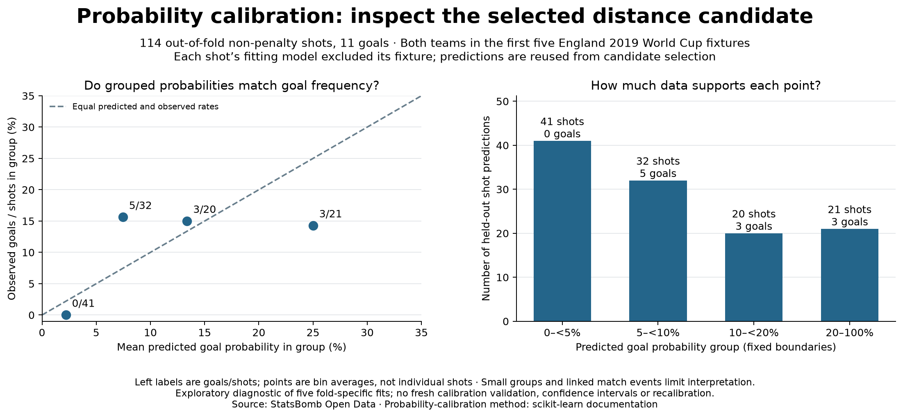

Football analyst training · Project lesson 26
Check the probabilities against groups of real outcomes.
Our model estimates a scoring probability. We do not know a true xG number for one shot. Calibration asks whether groups with similar predicted probabilities score at approximately the predicted rate.
1. Use predictions made outside each fitting fixture
Take the 114 predictions from our rotating four-match fits. Every shot's fixture was excluded from its fitting model. We reuse these development predictions after selecting the distance candidate, so this is an exploratory check, not independent certification of the final fitted model.
2. Put similar predictions together
For shots predicted between 5% and below 10%, we have 32 shots. Their mean prediction is about 7.5%. The recorded outcomes contain five goals:
observed goal rate = 5 / 32 * 100 = 15.625%
3. Read the chart
On the left, the horizontal axis is the group's average predicted probability. The vertical axis is the group's observed goal rate. A point on the dashed line means the two sample numbers agree. Above the line, more goals occurred than the probabilities suggested; below it, fewer occurred.
The right panel shows the number of shots supporting each point. Small groups fluctuate. Zero goals among 41 low-prediction shots does not prove those shots had zero scoring chance.
4. Separate a diagnostic from a verdict
The probabilities sum to about 11.21 goals and 11 were observed overall. That close total hides differences between groups. A single total or lower error score does not establish reliable probabilities. We need more representative fresh match data before making a practical reliability claim; this plot does not repair the model.
5. Follow the code and explain the result
Open 26_probability_calibration.py in Spyder. probability_bin groups predictions; calibration_bins calculates mean probability and goals/shots separately. No new model is fitted.
Write a two-sentence assessment using the 32-shot group: one observation and one limitation. Do not call its observed rate the known true xG of an individual shot.
Check your wording
“For 32 out-of-fold shots with predictions from 5% to below 10%, the mean prediction was about 7.5% and five goals were observed, a 15.6% sample goal rate. The group is small and reuses development data, so this does not establish a true per-shot probability or general calibration.”
Ask your teacher to explain a point on the chart or review your assessment. Independent interpretation remains separate from running assistant-prepared code.
Previous: model comparison · Probability reference · Full diagnostic report